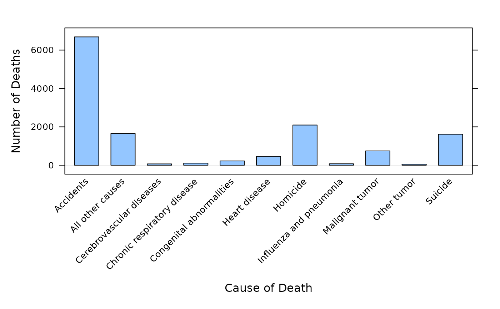
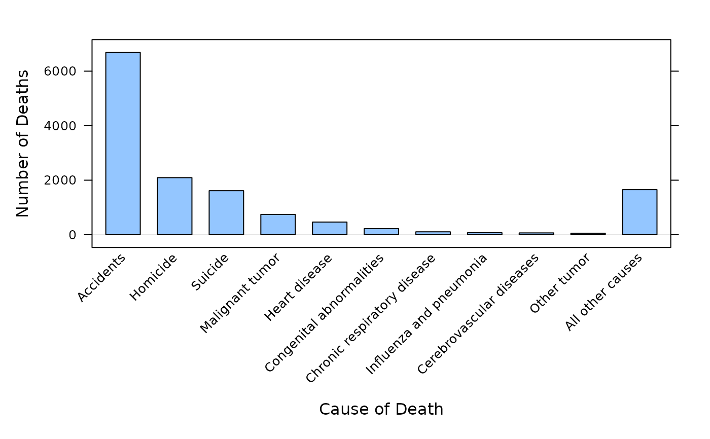

Causes of Teenage Deaths
TeenDeaths.RdData from Table 1 (p. 14) on causes of death for all races, both sexes, ages 15-19.
Format
A data frame with 11 observations on the following 2 variables.
- cause
a character vector
- deaths
a numeric vector
Source
Anderson, R.N. 2001. Deaths: Leading causes for 1999. National vital statistics reports 49(11):1-88. National Center for Health Statistics; Hyattsville, Maryland.
Examples
str(TeenDeaths)
#> 'data.frame': 11 obs. of 2 variables:
#> $ cause : Factor w/ 11 levels "Accidents","All other causes",..: 1 7 11 9 6 5 4 8 3 10 ...
#> $ deaths: int 6688 2093 1615 745 463 222 107 73 67 52 ...
TeenDeaths
#> cause deaths
#> 1 Accidents 6688
#> 2 Homicide 2093
#> 3 Suicide 1615
#> 4 Malignant tumor 745
#> 5 Heart disease 463
#> 6 Congenital abnormalities 222
#> 7 Chronic respiratory disease 107
#> 8 Influenza and pneumonia 73
#> 9 Cerebrovascular diseases 67
#> 10 Other tumor 52
#> 11 All other causes 1653
barchart(deaths ~ cause, TeenDeaths,
horizontal = FALSE,
ylab = "Number of Deaths",
xlab = "Cause of Death", origin=0,
scales = list(x = list(rot=45)))

barchart(deaths~ordered(cause, levels=cause), TeenDeaths,
horizontal = FALSE,
ylab = "Number of Deaths",
xlab = "Cause of Death", origin=0,
scales=list(x=list(rot=45))
)
